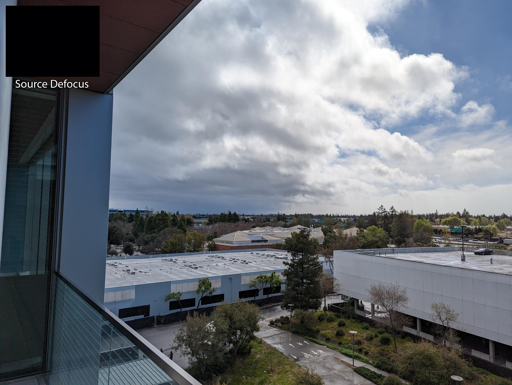
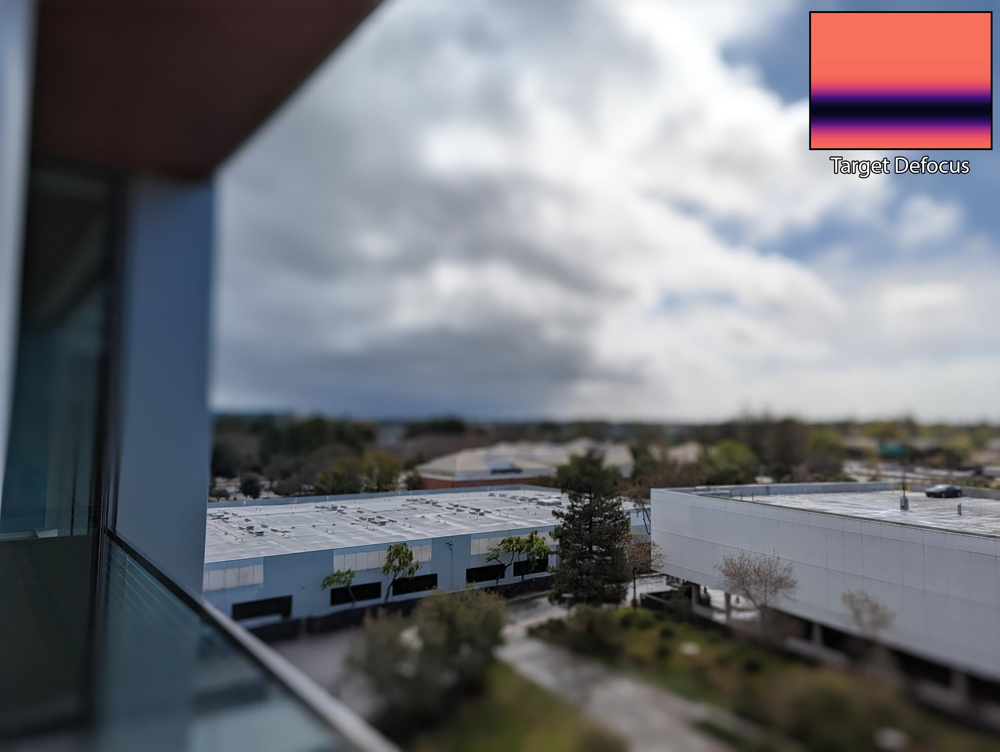
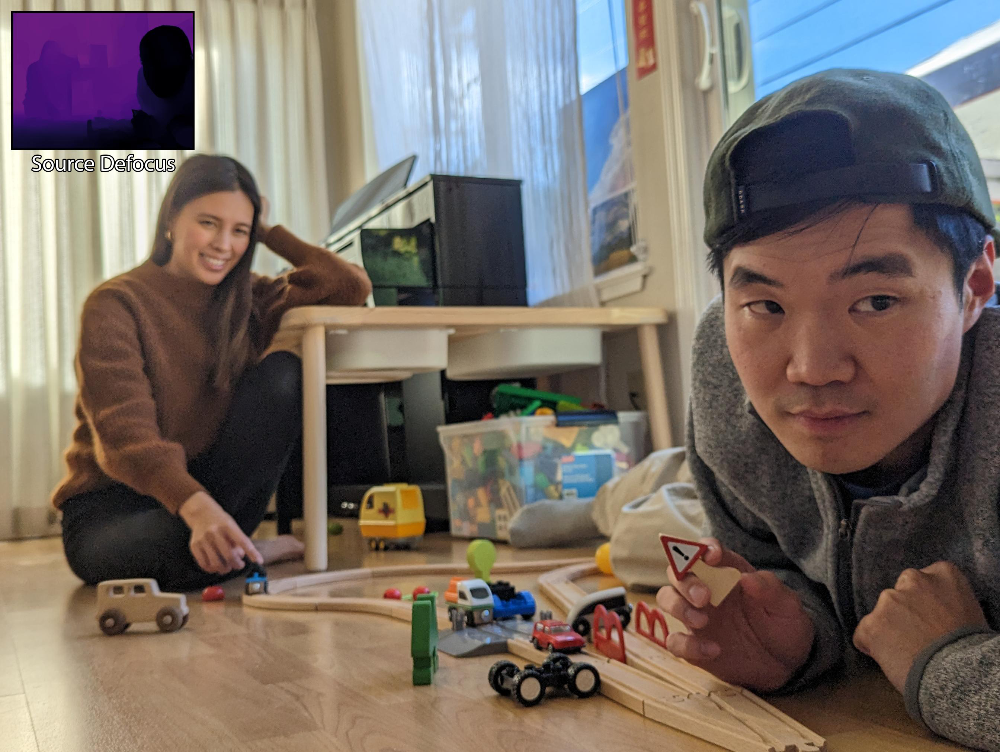
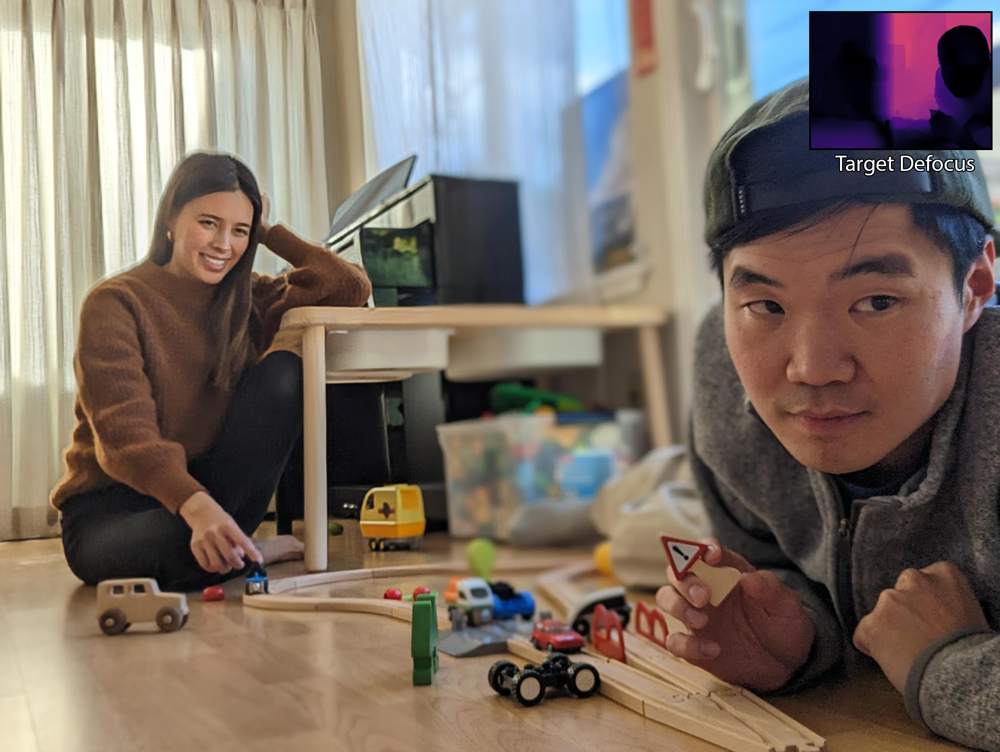
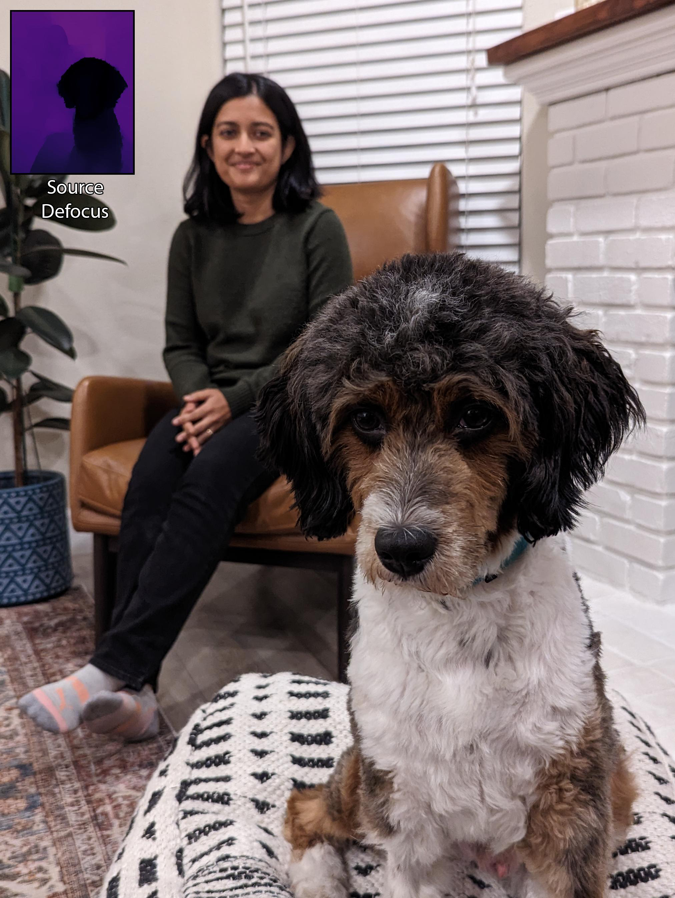
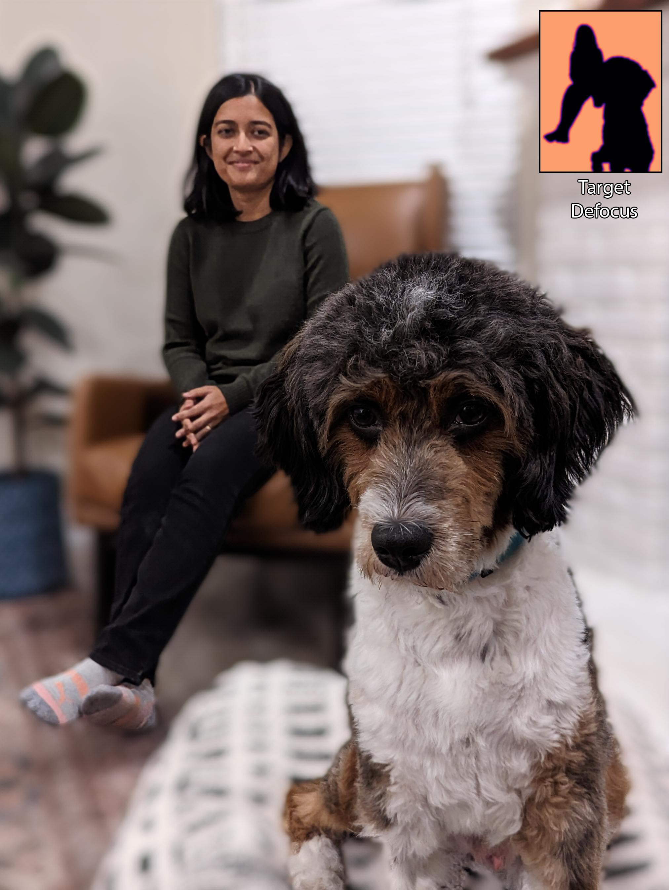

Tokyo 16k Image Reconstruction Compression Ratio: 200X
Abstract
The ability to learn compact, high-quality, and easy-to-optimize representations for visual data is paramount to many applications such as novel view synthesis and 3D reconstruction. Recent work has shown substantial success in using tensor networks to design such compact and high-quality representations.
However, the ability to optimize tensor-based representations, and in particular, the highly compact tensor train representation, is still lacking. This has prevented practitioners from deploying the full potential of tensor networks for visual data.
To this end, we propose `Prolongation Upsampling Tensor Train (PuTT)', a novel method for learning tensor train representations in a coarse-to-fine manner. Our method involves the prolonging or `upsampling' of a learned tensor train representation, creating a sequence of `coarse-to-fine' tensor trains that are incrementally refined.
We evaluate our representation along three axes: (1). compression, (2). robustness to noisy data, and (3). learning from incomplete or missing data. To assess these axes, we consider the tasks of image fitting, 3D fitting, and novel view synthesis, where our method shows an improved performance compared to state-of-the-art tensor-based methods.
Overview
We want to train TTs
We use a prolongation operator to upsample the learned representation
We train In a Coarse-To-Fine manner
Comparison with Baselines
Compression - 16K Images
Creative Applications
Our method allows for arbitrary defocus control by simply providing the desired defocus map to the model. The defocus control does not have to be physically realistic, so you can go wild with your imaginations! Here we show some examples that we thought of, and include the source and target defocus maps used for each example.
Tilt shift effect
Tilt shift can be used to control the depth of field, and produce miniature-like effect. With hardware, it is done by tilting the lens with respect to the sensor, but here we simulate it by setting the target defocus map to correspond to a very narrow DoF. At the top of the image below, you can view the source defocus map (all-in-focus so all black) and target defocus map used for this example.


Split focus effect
Split focus is a cinematic effect used in movies to emphasize and focus on two subjects at different distances from the camera. It often requires custom lens to make it work with hardware, but we can simply do it in software with our method. Here we set the left half of the photo to be focused on the woman, and the right half is focused on the man and with a reduced DoF for emphasis. You can compare the source defocus map and target defocus map used to generate this photo.


Content driven defocus control
Here we choose to highlight the woman and dog by simply setting them to be all-in-focus and blur out everything else. We simply set the target defocus map to be the segmentation mask we created.


BibTeX
@inproceedings{alzayer2023defocuscontrol,
title={DC2: Dual-Camera Defocus Control by Learning to Refocus},
author={Alzayer, Hadi and Abuolaim, Abdullah and Chun Chan, Leung and Yang, Yang and Chen Lou, Ying and Huang, Jia-Bin and Kar, Abhishek},
booktitle={Proceedings of the IEEE/CVF Conference on Computer Vision and Pattern Recognition},
pages={--},
year={2023}
}